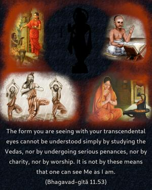

The form you are seeing with your transcendental eyes cannot be understood simply by studying the Vedas, nor by undergoing serious penances, nor by charity, nor by worship. It is not by these means that one can see Me as I am.

Kṛṣṇa first appeared before His parents Devakī and Vasudeva in a four-handed form, and then He transformed Himself into the two-handed form. This mystery is very difficult to understand for those who are atheists or who are devoid of devotional service. For scholars who have simply studied Vedic literature by way of grammatical knowledge or mere academic qualifications, Kṛṣṇa is not possible to understand. Nor is He to be understood by persons who officially go to the temple to offer worship. They make their visit, but they cannot understand Kṛṣṇa as He is. Kṛṣṇa can be understood only through the path of devotional service, as explained by Kṛṣṇa Himself in the next verse.